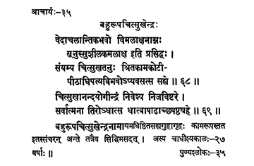

35. आचार्य - 35 - बहुरूपचित्सुखेन्द्राः
वेदाचलान्तिकभवो ••• सह्यो ॥ ६८ ॥
चित्सुखानन्दय्गीन्द्रं ••• धात्वाषाढाच्छषष्ठ्यहे ॥ ६९ ॥
बहुरूपचित्सुखेन्द्र ••• सप्तविंश (२७) वर्षाः ॥
Born near the Vedāchala mountain as the son of Vimalākṣa and well-known as Suśīlakamalākṣa, after renunciation became Citsukha; having had the authority of the preceptor-ship of Kāñci, he lived in the caves of Sahya mountain.
He, having installed/deputed Citsukhānanda Yogīndra in his place, vanished fully on the sixth day of the bright fortnight of the month of Āṣāḍha of the year Dhātu.
His preceptor-ship was for twenty-seven years.
